Implementation Reference — Harleys Odoo 19 Enterprise
Shared Login & Employee Attribution
How a small pool of shared functional accounts, used by a much larger employee base, can still tell you exactly which person performed a given action — a login-time identity check, automatic per-message attribution, and opt-in deeper logging (including deletions) for individual models.
1. The problem
A limited number of res.users accounts, a much larger number of hr.employee records. Many roles are shared responsibilities worked from a common login — e.g. two employees both use the Supply Chain Planner account depending on shift. When a Purchase Order, Indent Request, or any other business record is created or changed, create_uid/write_uid only ever points at the shared account — never at the person who was actually at the keyboard.
The goal: know which employee performed a given action, without provisioning an individually licensed Odoo user for every employee.
2. Architecture: two independent pieces
The solution has two parts that work together but are independently useful:
| Part | Answers | Where it lives |
|---|---|---|
| Login-time verification | "Which employee is behind this session, right now?" | models/res_users.py, controllers/main.py |
| Message-level attribution | "Tag every chatter message this session posts, on every model, with that employee — and optionally log the changes and deletions that don't naturally produce a message at all." | models/message_attribution.py, models/attribution_config.py, models/attribution_log.py |
Neither part requires per-employee Odoo user licenses. Only the functional accounts are licensed res.users; employees prove their identity with their own existing personal login (the same one used for HR self-service today).
3. Part 1 — Login-time identity verification
Rather than building a custom session gate, this reuses the exact mechanism Odoo's own two-factor authentication (auth_totp) is built on:
res.users._mfa_type()/_mfa_url()— hooks core already calls to ask "does this account need a second verification step, and if so, where do I send the user?"- The session's
pre_uid→finalize()flow (odoo/http.py) — when_mfa_url()returns a URL, the session is left in a pending state (pre_uidset,uidunset) until that second step callsfinalize(). Every route that checkssession.uid— nearly all of them — automatically treats a pending session as "not logged in," so no separate bypass-guard was needed.
What happens on login
- A user signs in with a functional account's own credentials (e.g.
planner@harleys.com) at the normal Odoo login screen — no change to that screen. - If that account is flagged
is_shared_login, Odoo's own MFA redirect mechanism sends the browser to a second page: Confirm your identity. - The employee enters their own existing personal login (the same credential they already use for HR self-service /
employee_portal) — not a new password. - That credential is checked via the same
res.users.authenticate()core uses for the primary login (so brute-force cooldown applies here too), but it never becomes the session'suid— it's a proof of identity, not a second login. If the account has anauthorized_employee_idsallow-list configured, the employee must also be on it. - On success, the original functional account's session is finalized, and the employee's id is stored in the session (
employee_binding_id) for the rest of that browser session.
An individual (non-shared) login skips step 2 entirely — zero UX change for anyone using their own personal account.
4. Part 2 — Message-level attribution (two layers)
Every chatter-enabled model (anything using mail.thread or a variant) is extended once, in models/message_attribution.py, via _inherit = 'mail.thread'. Because Odoo composes that mixin into every model that uses it, this applies automatically to every current and future model — no per-model registration file, no manifest dependency on the owning module.
Layer 1 — always on
Overrides _message_create() — the single point every message-posting path converges on before a mail.message row is actually written, whether it came from:
- A manual "Log note" or Discuss message (
message_post()), - Odoo's own automatic field-change tracking (
_message_log()— this matters: a plain tracked-field change with no custom subtype configured, like a status change on an Indent, does not go throughmessage_post()at all — an earlier version of this module missed these until the hook was moved to_message_create), - Or any explicit business-logic call to post a message.
Adds employee_id to the message (structured and queryable, not just text) and appends an inline "— Logged by <employee>" note. Free, automatic, no configuration.
mail.message doesn't itself inherit mail.thread). No new noise — it only enriches messages that were already going to be posted; it never manufactures new ones.
Layer 2 — opt-in per model
Layer 1 only covers what already gets posted as a chatter message. Two real gaps remain structurally out of its reach:
- Fields with no
tracking=Trueconfigured — a plain field change nobody asked Odoo to log in the first place. - Line items — child records such as Indent Request Lines, whose own chatter panel isn't shown anywhere in the UI.
Layer 2 closes both, but only where an admin opts a specific model in. It overrides create()/write()/unlink() on the same class, gated by three new fields on ir.model (see §5). Where a record has a parent document, the note is posted on the parent's chatter instead of the child's invisible one — see §5 for exactly how the parent is identified, and §7 for how batches of records are consolidated into a single note instead of one per row.
5. Admin configuration: enabling deeper attribution for a model
Layer 2 reuses Settings → Technical → Models (ir.model) rather than a new screen — already searchable by name/module, already technical-user-only. A new Employee Attribution tab (restricted to base.group_system) adds:
| Field | Type | Meaning |
|---|---|---|
employee_attribution_log_changes | Boolean | Post an explicit "Created/Updated" note on every create/write for this model, regardless of field tracking. Off by default. |
employee_attribution_log_deletions | Boolean | Post a "Deleted" note when a record is removed. Off by default. |
employee_attribution_parent_field_id | Many2one → ir.model.fields | The Many2one field on this model pointing to its parent document (e.g. "Indent Request" on Indent Request Line). A dropdown domain-filtered to Many2one fields belonging to the model being configured — not a technical name typed by hand. |
A constraint (_check_employee_attribution_config) blocks enabling either boolean on:
- Technical/infrastructure models (
mail.*,bus.*,ir.*,base_automation,iap.*,studio.*,res.users) — hard-excluded regardless of admin intent, to avoid recursion/noise in the mail/system internals. - Any model without a chatter to log to (a
message_postcapability check). - A
parent_field_idthat doesn't actually belong to the model, or isn't a Many2one.
Delete with no parent field → does not post on the record (it would be wiped by
mail.thread.unlink()'s own message cleanup moments later) — falls back to the standalone log table instead (§6).
Auto-detecting the parent field
_auto_detect_attribution_parent_field() uses a heuristic: the Many2one field with ondelete='cascade' is the standard Odoo convention for a line item's relation to its owning document (sale.order.line.order_id, account.move.line.move_id, stock.move.line.picking_id, this repo's own indent.request.line.request_id all use it). It returns that field when there's exactly one candidate, and returns nothing — left for manual review — when there are zero or multiple candidates. Genuinely top-level documents correctly yield nothing, since they don't have one.
Bulk "Enable Employee Attribution"
action_enable_employee_attribution() is a bulk operation, exposed as a contextual action in the Models list view: select any rows — including all of them — and run it. For each selected row, it skips (and logs) anything technical/incompatible; otherwise it turns both booleans on and auto-fills the parent field if one isn't already set and the heuristic finds exactly one candidate. This was run once already across the instance's model list.
1Open Settings
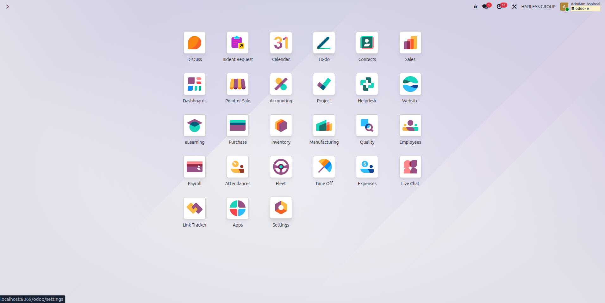
2Switch to the Technical tab
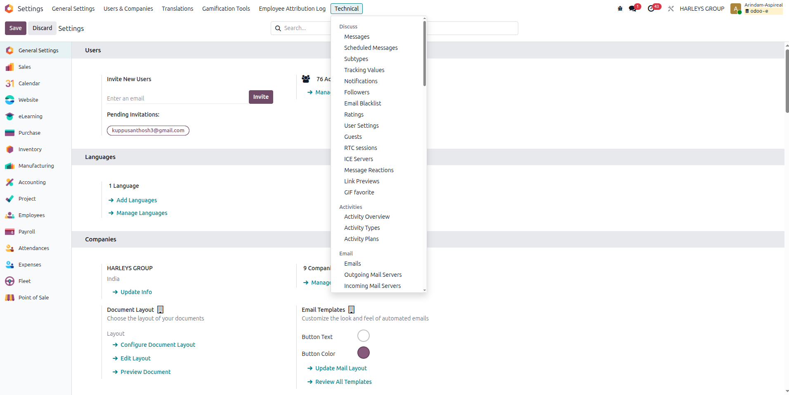
3Open Models under Database Structure
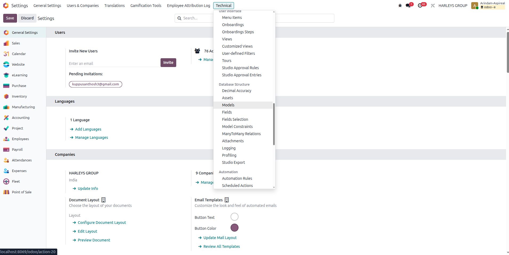
4Bulk-enable across every model, or just the ones you pick
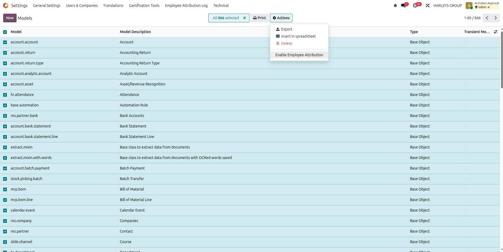
5Fine-tune a single model by hand
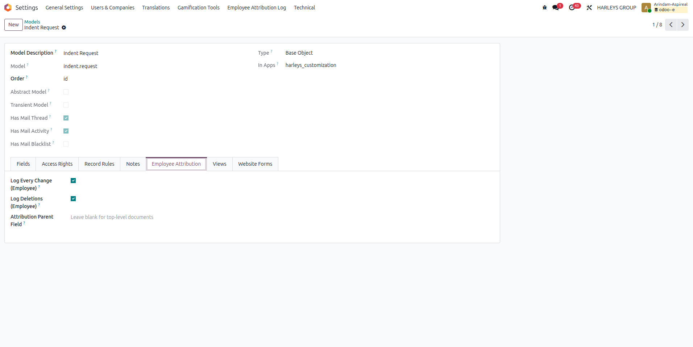
6. The parentless-deletion log — hr.attribution.log
The one thing chatter genuinely cannot do: log a deletion for a record with no parent to redirect to (a top-level document, or a specific record whose parent field happens to be unset). Deliberately narrow in scope — this is not a general duplicate log, it exists only for that one gap. It is not mail.thread-based (it is the log; logging to it would be circular).
| Column | Type |
|---|---|
employee_id | FK → hr.employee |
user_id | FK → res.users |
company_id | FK → res.company |
res_model | Char |
res_id | Integer |
record_name | Char |
action | Selection (currently only 'deleted') |
logged_at | Datetime |
_log_access = False — no create_uid/write_uid/create_date/write_date, since user_id + logged_at already cover that, deliberately.
Read-only in the UI (perm_write/perm_create/perm_unlink all 0) for base.group_system and hr.group_hr_manager; only ever written via sudo() from the deletion fallback path in code. Browsable at Settings → Administration → Employee Attribution Log.
7. Consolidation: one note per batch, not one per record
_log_attribution_change() and _log_attribution_deletion() group records by parent rather than looping and posting per record. Verified against this repo's actual code — both noisy cases reported during testing are each a single batched ORM call, so both are already fully consolidated by this grouping (one summary note like "Created: 40 line(s)." per parent per call, or the specific description when only one record is involved):
- A template loading many
indent.request.linerecords via(0,0,vals)One2many commands. indent_request.py'srequest.line_ids.write({'state': 'sent'})status change.
8. Walkthrough (as tested)
This is the exact sequence used to verify the login-time verification and Layer 1 attribution, using the Supply Chain Planner shared account and two real employees.
1Confirm the account before setup
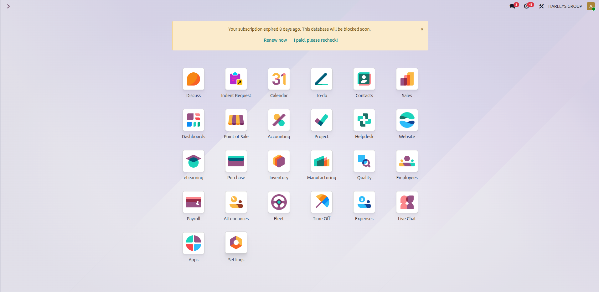
2Locate the account in Settings
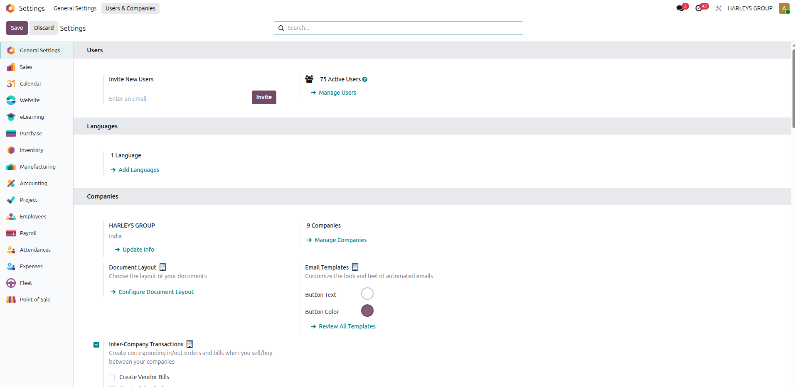
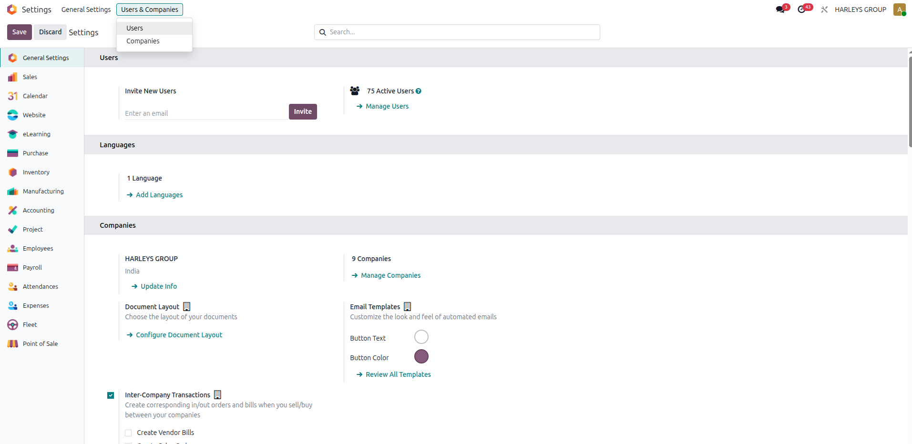
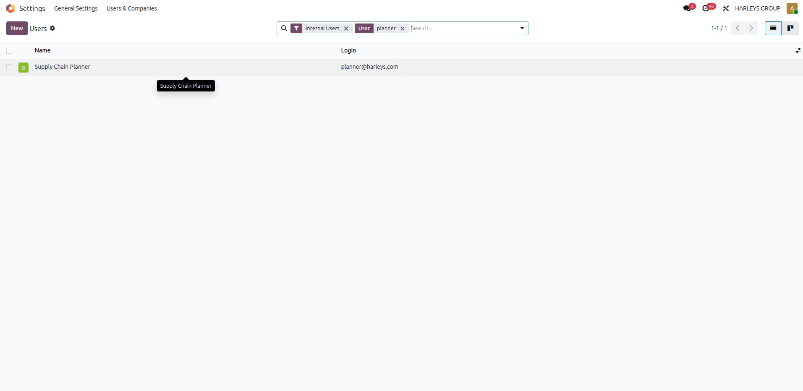
3Mark the account as shared and authorize employees
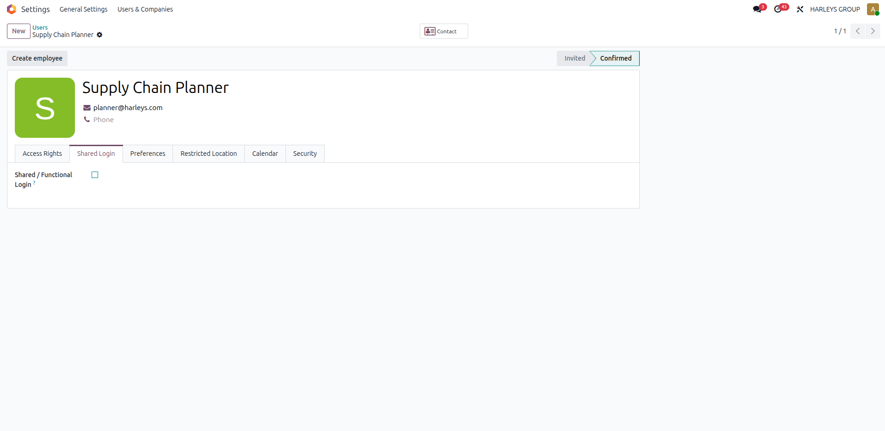
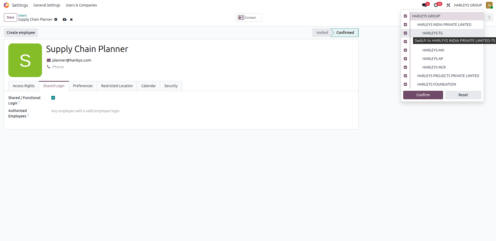
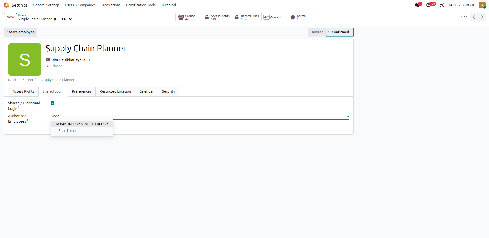
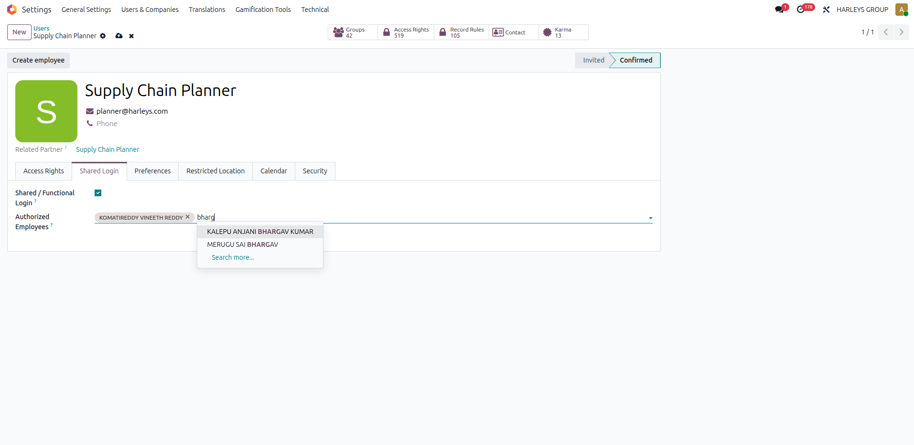
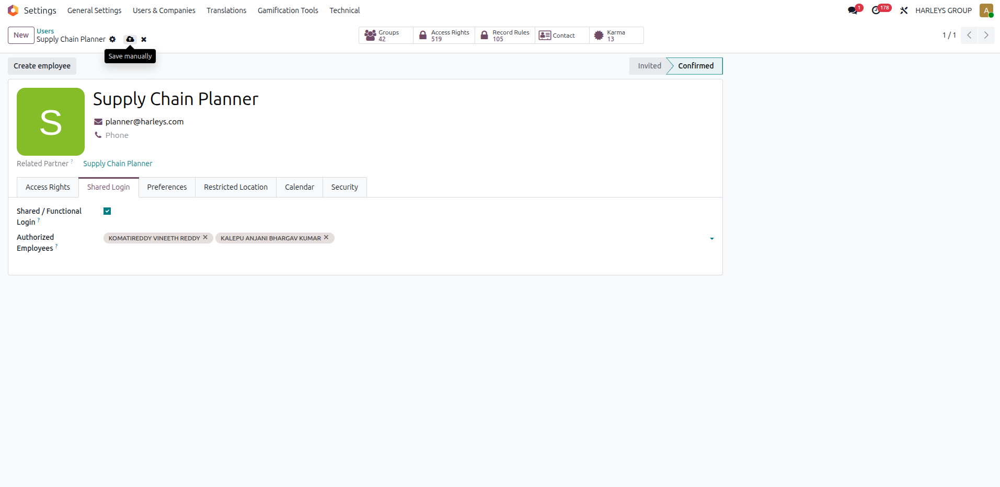
4First employee logs in through the shared account

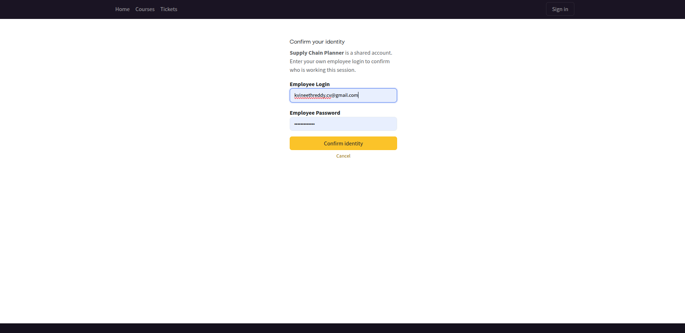
5Create an Indent Request and check the chatter
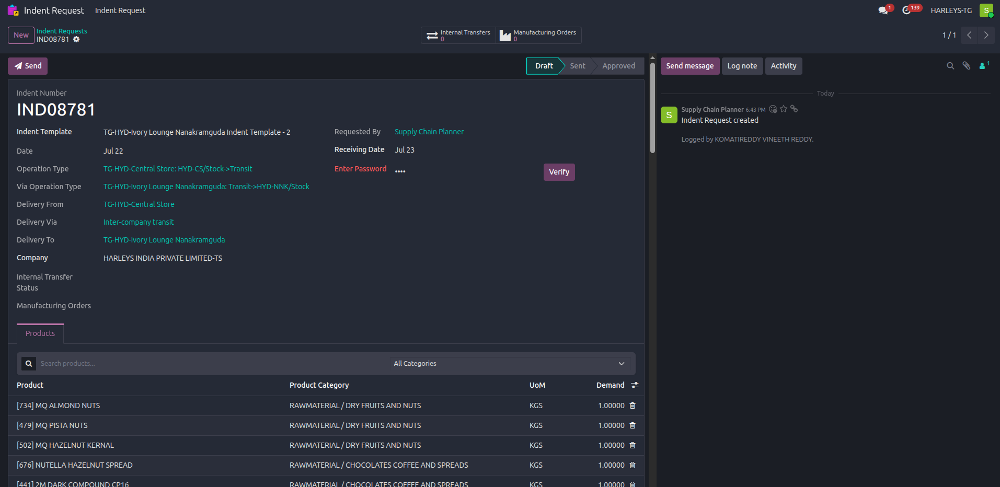
6Log out, second employee logs in through the same shared account
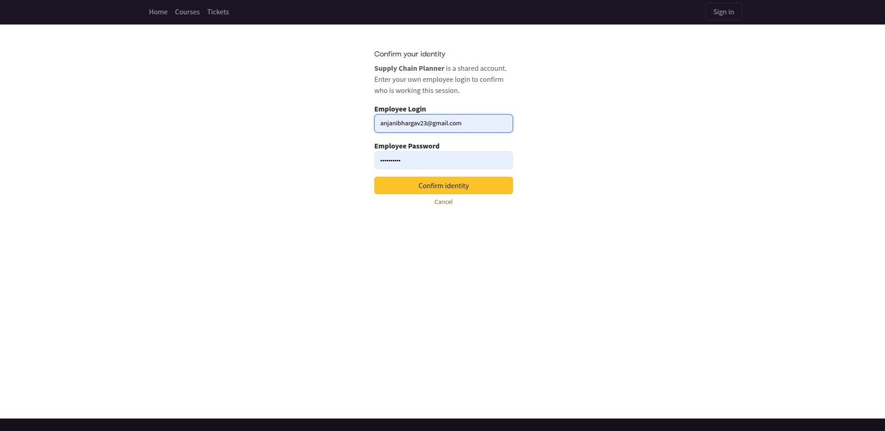
7Change the record's status and check the chatter again
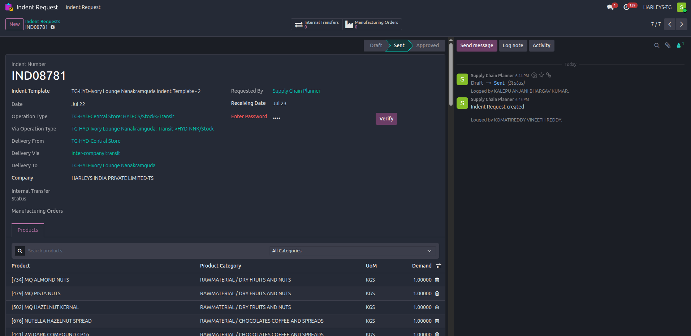
9. Admin guide: marking an account as shared
- Settings → Users & Companies → Users, open the account.
- Open the Shared Login tab.
- Check Shared / Functional Login.
- Optionally add specific employees to Authorized Employees. Leave empty to allow any employee with a valid personal login to bind to this account; populate it to restrict which employees may use it.
- Save.
No restart or module update is needed for this step — it's a plain data change. The Shared Login tab itself is only visible to users with Settings/Administration access (base.group_system).
10. Module reference — hr_shared_login_binding
| File | Responsibility |
|---|---|
__manifest__.py | Module metadata and dependencies. |
models/res_users.py | is_shared_login, authorized_employee_ids fields; _mfa_type()/_mfa_url() overrides that trigger the employee-verify step, chaining through super() so an account with real 2FA configured keeps using that instead. |
controllers/main.py | The /web/login/employee_verify route: renders the second-step form, validates the submitted employee credential, checks authorized_employee_ids if set, finalizes the functional account's session and binds the employee id to it. |
views/employee_verify_templates.xml | The "Confirm your identity" page template, built on the same layout as the standard login and 2FA pages. |
views/res_users_views.xml | Adds the Shared Login tab to the user form (admin-only). |
models/message_attribution.py | Both attribution layers on the same mail.thread-extended class: the Layer 1 _message_create() override (employee_id field + "Logged by" note), and the Layer 2 create()/write()/unlink() overrides plus the consolidation helpers (§7), gated by the ir.model config below. |
models/attribution_config.py | The ir.model extension: the three Employee Attribution fields (§5), the compatibility constraint, the parent-field auto-detect heuristic, and the bulk "Enable Employee Attribution" action. |
models/attribution_log.py | hr.attribution.log (§6) — the fallback log for parentless deletions. |
views/ir_model_views.xml | The Employee Attribution tab on the model record, and the bulk action entry in the Models list view. |
views/attribution_log_views.xml | Read-only list/form views for hr.attribution.log and its Settings → Administration menu item. |
models/employee_attribution_mixin.py, models/attribution_targets.py | An earlier, per-model create/write implementation. Disabled (not imported) but kept on disk as a fallback/reference — see §11. |
11. Design decisions and alternatives ruled out
Several approaches were evaluated before arriving at the current design:
- PIN/badge gate modeled on
mrp_workorder's Shop Floor login — rejected as the primary mechanism because it only covers interactive UI sessions, not API/automation-triggered writes, and adds friction to every single action rather than once per session. - Resolving identity from
hr_attendanceclock-in/out data — rejected as unreliable: stale "still checked in" state and simultaneous multi-employee attendance would create ambiguous attribution. Login-time verification is deterministic instead. - A brand-new password field on
hr.employee— rejected in favor of reusing each employee's existing personal login (already provisioned viaemployee_portal), avoiding a second credential store and, importantly, avoiding any new licensedres.usersseats. - Per-model
create/writeoverrides, explicitly listed (attribution_targets.py) — the first working implementation; scaled to dozens of models across many module dependencies before being judged too heavy to maintain and test. Layer 2 (§4, §5) later revisits create/write overrides, but as one generic, config-driven mechanism gated byir.modelfields — not one Python class per model. - A blanket, fully-automatic patch across every model in the registry — considered and rejected: real recursion risk (a message-posting patch could trigger itself via
mail.messagecreation if not scoped carefully), noise on high-frequency internal writes, and harder to debug than an explicit mechanism. Layer 2's opt-in-per-model design and the technical/infrastructure exclusion list (§5) are the direct answer to this concern. - The current approach — one hook on
mail.thread._message_create(), plus opt-increate/write/unlinkoverrides on the same class — adopted because Layer 1 only enriches messages that were already going to be posted (no new noise, no recursion risk, sincemail.messagedoesn't inheritmail.thread) and applies automatically everywhere, while Layer 2 closes the remaining gaps (untracked fields, line items, deletions) only where an admin explicitly opts a model in.
12. Known limitations / open items
- Enabling
employee_attribution_log_changeson a model that already hastracking=Truefields (most real business documents) produces a second, redundant note alongside the native tracking message Layer 1 already tags. The bulk-enable action does not currently avoid this — it turns both flags on regardless of whether native tracking already covers a model. A more surgical default (only auto-enable on models with no tracked fields, or with a parent field) was discussed as an alternative but not built. - The auto-detect heuristic is a best guess, not a guarantee — models with more than one
ondelete='cascade'Many2one are left for manual review, and it cannot distinguish "genuine top-level document" from "child model that just doesn't use cascade delete." - No employee code (e.g. a short "007"-style reference) in the note yet —
hr.employee.registration_number("Employee Reference") is the natural field for this, but it isn't populated for any employee yet. Once populated, one line of code adds it to the note. - An earlier, fully static per-model implementation (
models/attribution_targets.py, one_inheritclass per model) exists in the codebase but is disabled (import commented out inmodels/__init__.py) — kept only as a fallback/reference, superseded by the two-layermail.threadapproach. Its dependency list (spanning many modules) is still declared in the manifest even though the file is disabled, so the fallback stays usable without a manifest change if ever re-enabled. Worth revisiting if the per-model approach is retired for good. ir_modelmay still carry one orphaned, unused text column (employee_attribution_parent_field, the pre-dropdown version of the parent-field setting) if-uwas run while that version was briefly active — harmless, not yet cleaned up.- Two-factor auth coexistence: if an account is ever both
is_shared_loginand has TOTP enabled, only the TOTP prompt fires today (not both in sequence). Not a concern currently sinceauth_totpisn't in use in this instance. - Coverage is bounded to messages that already get posted, for any model that hasn't had Layer 2 enabled. A model write that never triggers any message (no field tracking, no explicit log, Layer 2 off) has nothing to attribute — this is by design, not a gap, but worth knowing when auditing "why isn't this action showing an employee."
13. Full schema reference
All tables touched by this module, for reference:
| Table | Change |
|---|---|
res_users | + is_shared_login (bool) |
res_users_authorized_employee_rel | new — plain M2M junction for authorized_employee_ids (who may bind to a shared account), not a log |
mail_message | + employee_id (FK hr_employee) — this is where every attribution note actually lives |
ir_model | + employee_attribution_log_changes (bool), + employee_attribution_log_deletions (bool), + employee_attribution_parent_field_id (FK ir_model_fields) |
hr_attribution_log | new table (§6) — fallback for parentless deletions only |
There is still no dedicated "all logs" table — querying "everything employee X did, across every model and every account" is SELECT * FROM mail_message WHERE employee_id = X, the same table Odoo's own chatter has always used, plus hr_attribution_log specifically for the deletion-with-no-parent case.